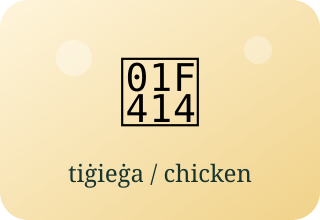

Gender and Agreement
Il-maskil u l-femminil
People and Family
Learn each pair together. Possessive forms such as ħija include the owner: my brother.
| Masculine | Feminine | Meaning and Context |
|---|
Animal Pairs

| Masculine | Feminine | Meaning and Context |
|---|
Adjective Forms
Some feminine forms add -a; others also change the stem. Learn the complete form.
| Masculine | Feminine | Meaning |
|---|
Agreement in Context
More family and role examples
Past-Tense Verb Forms
These examples contrast he and she in the third-person singular past tense. They are not a rule for classifying every word ending in -t.